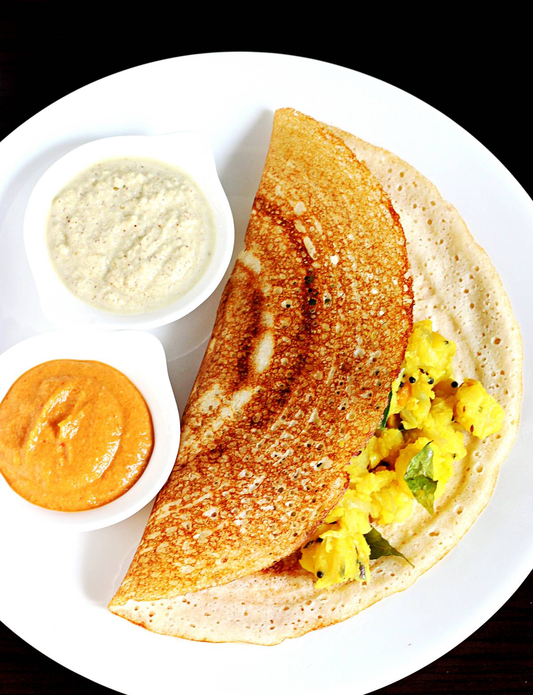

Intro:
Dosa is a classic South Indian savory crepe made with a fermented batter of lentils, rice and fenugreek seeds. The ingredients are soaked for several hours, ground to a thick batter and left to naturally ferment overnight in a warm place.

Ingredients
- Raw Rice: 12 cups (preferably a short-grain raw rice like Sona Masuri)
- Dal: - cup (skinned black gram, whole or split)
- Chana Dal: 2 tablespoons (Bengal gram - helps give that perfect golden color)
- Poha: 2 tablespoons (flattened rice - enhances the crispness)
- Methi Seeds: - teaspoon (fenugreek seeds - aids in fermentation)
- Water: Safe, cold filtered water for blending (roughly 14 cups, divided)
- Salt: - teaspoon sea salt or rock salt (avoid iodized table salt before fermentation as it can hinder the process)
STEPS:
- Soak (5-6 Hours)
- >Bowl 1: Soak 11/2 cups raw rice in water.
- Bowl 2: Soak 1/2 cup urad dal, 2 tbsp chana dal, and 1/2 tsp methi seeds in water.
- Note: Soak 2 tbsp poha in 1/4 cup water 30 minutes before grinding.
- Grind & Ferment (8-12 Hours)
- Grind Dal: Drain dal/methi. Blend with the soaked poha and % cup ice- cold water until ultra-smooth and frothy. Pour into a large bowl.
- Grind Rice: Drain rice. Blend with 1/2 cup cold water until smooth but micro-grainy (like fine sand).
- Ferment: Combine both batters, mix well with your hands, cover loosely, and let rise in a warm place until doubled and bubbly.
- Cook the Dosa
- Prep the Batter: Stir gently. Take what you need, add 1/2 tsp salt, and a splash of water if it's too thick to pour. (Refrigerate the rest).
- Heat the Pan: Get a tawa medium-hot. Wipe it with a paper towel dipped in a little oil (or a cut onion) to create a non-stick surface.
- Spread & Crisp: Pour a 14 cup ladle of batter in the center. Speedily spiral the ladle outward in circles to make a thin crepe. Turn heat to medium-high, drizzle ghee or oil on top, and cook until the bottom is a deep golden brown and the edges lift.